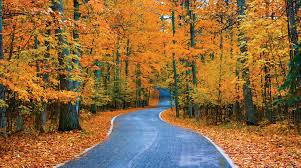

seasons of the year
"Autum is the third season of the year, when crops and fruits are gathered and leaves fall, in the northern hemisphere from September to November and in the southern hemisphere from March to May." as described by the Oxford dictionary. This is usually what we call fall as well. It is when trees start to lose their leaves and get really pretty colors on them. Depending on where you live this could be a time of amazing weather, or iit could be pooring down rain/snow for an extened winter. Autum also brings a lot of sports depending on where you live as well, as most sports are played in either the Spring or Autum.